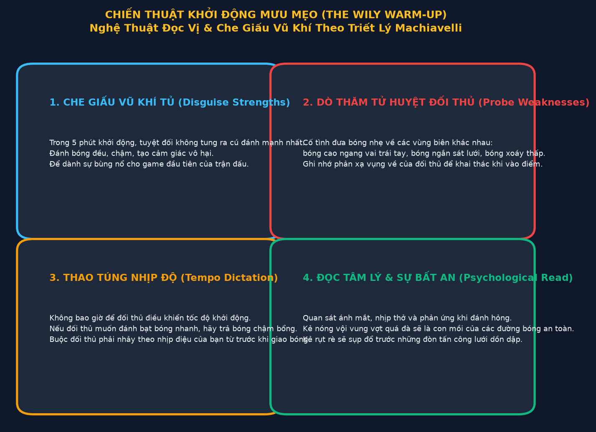
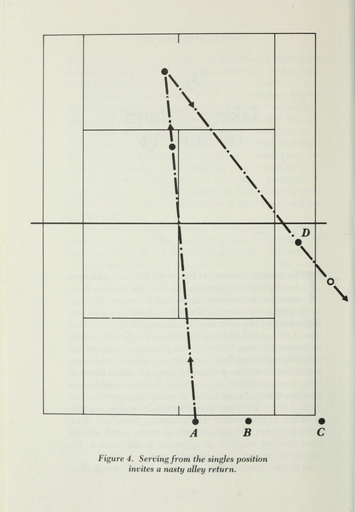
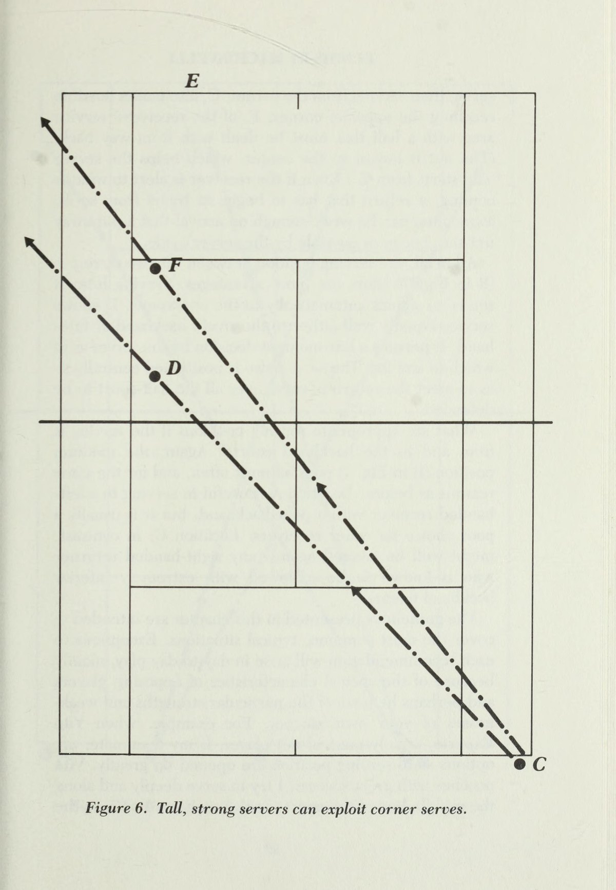
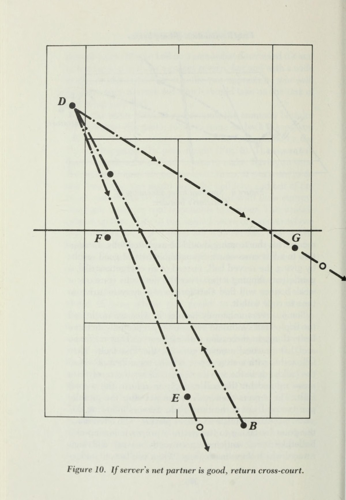
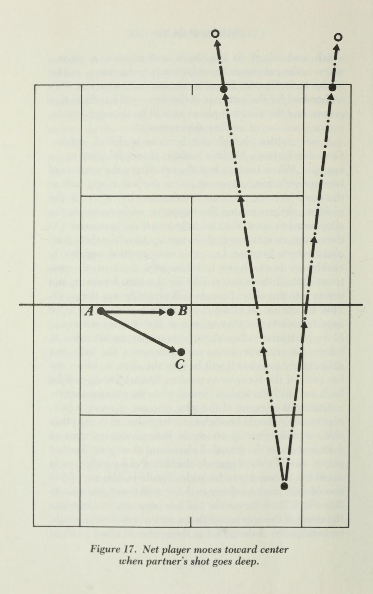
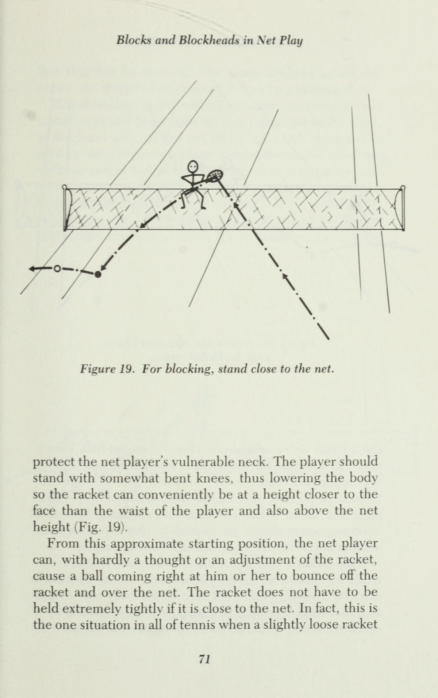
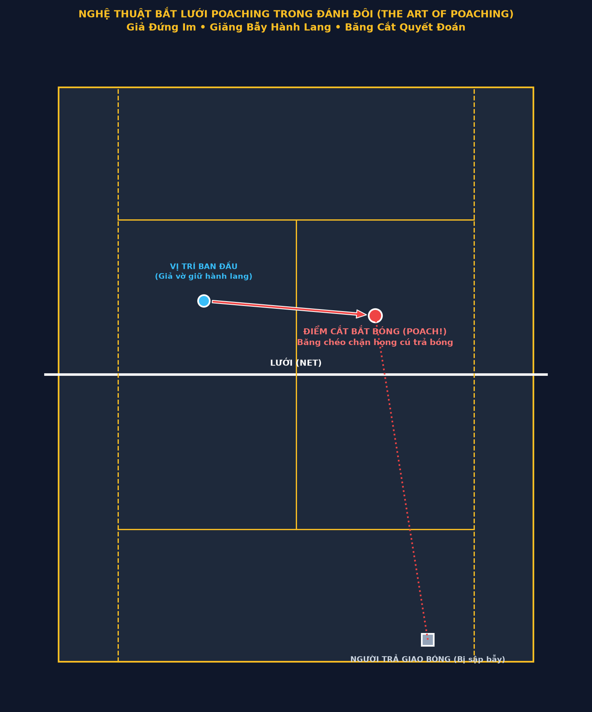
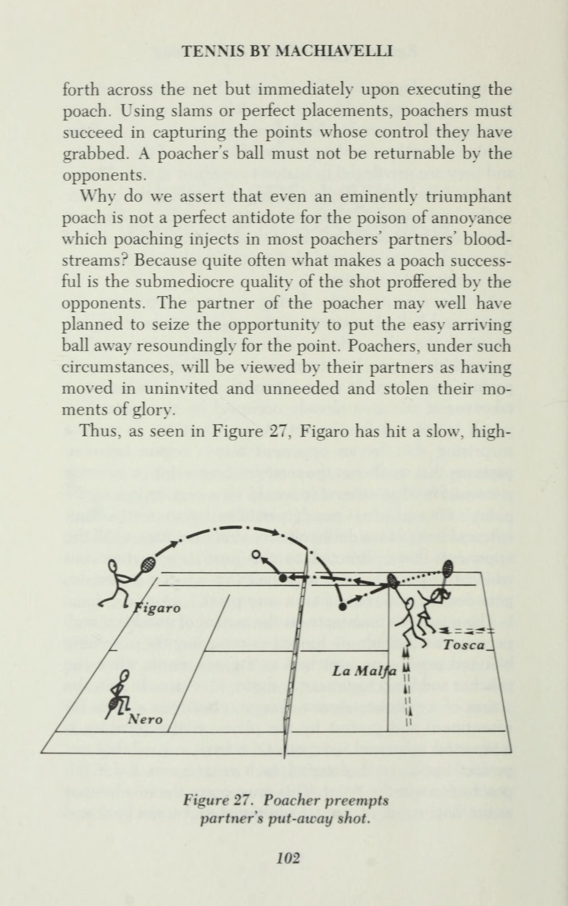

PHẦN 1: TRIẾT LÝ MACHIAVELLI & TÂM LÝ CHIẾN KHỞI ĐẦU
— Niccolò Machiavelli & Dr. Simon Ramo
Lời Người Dịch: Sự Khám Phá Bản Thảo Machiavelli Trên Sân Tennis
Niccolò Machiavelli (1469-1527) là nhà ngoại giao, triết gia chính trị lừng danh thời Phục Hưng nước Ý, tác giả của tác phẩm kinh điển Quân Vương (The Prince) — cẩm nang nghiên cứu sâu sắc nhất về nghệ thuật quyền lực, thao túng và chiến lược thực dụng.
Tiến sĩ Simon Ramo — một trong những bộ óc khoa học vĩ đại của nước Mỹ, người tiên phong trong ngành khoa học hệ thống tên lửa đạn đạo và công nghệ bán dẫn — đã nhận ra một sự thật chấn động: không có môn thể thao nào phản ánh chính xác các nguyên lý quyền lực của Machiavelli hơn môn quần vợt.
Trong quần vợt, bạn không đối đầu với một cỗ máy đo lường thành tích khách quan như điền kinh hay bơi lội; bạn đối đầu trực tiếp với một bộ não con người đầy cảm xúc, định kiến, sự tự phụ và nỗi sợ hãi. Người chơi trung niên hoặc cao tuổi không thể đọ lại sức trẻ, tốc độ hay cơ bắp cuồn cuộn của những đối thủ tuổi đôi mươi nếu chỉ thi đấu theo lối đánh cơ học ngây thơ. Nhưng bằng mưu mẹo, sự tinh quái và nghệ thuật thao túng tâm lý Machiavellian, họ hoàn toàn có thể bẫy đối thủ vào mê hồn trận và giành chiến thắng giòn giã.
Chương 1: Thống Trị Thông Qua Đánh Đôi (Dominance Through Doubles)
Tại sao Machiavelli lại chọn sân đánh đôi làm đấu trường chính? Trong đánh đơn, bạn chỉ phải tương tác với một đối thủ duy nhất. Nhưng trong đánh đôi, bàn cờ chính trị trở nên phức tạp gấp bội: có hai đối thủ với hai tính cách trái ngược, và quan trọng nhất — có một người đồng đội đứng ngay cạnh bạn.
Một chính khách Machiavellian nhìn nhận trận đánh đôi như một liên minh quân sự tạm thời. Bạn không chỉ phải tìm cách làm rối loạn nội bộ đối phương, khoét sâu vào mâu thuẫn giữa hai đối thủ, mà còn phải biết cách khích lệ, che chở và đôi khi là điều khiển người đồng đội của mình như một quân cờ chiến lược trên bàn cờ.
Chương 2: Lựa Chọn Đối Thủ Dễ Thắng & Bạn Chơi Dễ Bảo (Selecting Vincible Rivals & Pliable Partners)
Nguyên tắc quyền lực đầu tiên của Machiavelli: "Đừng bao giờ bước vào một cuộc chiến mà bạn chưa nắm chắc phần thắng trong tay."
Người chơi ngây thơ thường tự hào khoe rằng họ thích thách đấu với những đối thủ mạnh hơn hẳn để "học hỏi." Machiavelli gọi đó là sự ngây ngô tự sát. Người mưu lược tại câu lạc bộ luôn biết cách khéo léo sắp xếp trận đấu:
- Nhận diện đối thủ dễ tổn thương (Vincible Rivals): Hãy tìm kiếm những đối thủ có kỹ thuật trông rất đẹp mắt nhưng tâm lý mong manh, những người dễ nổi nóng khi bị bắt bóng chạm vạch hoặc những kẻ quá kiêu ngạo không chịu đánh bóng an toàn.
- Lựa chọn đồng đội dễ bảo (Pliable Partners): Người đồng đội lý tưởng không nhất thiết phải là người giỏi nhất câu lạc bộ. Người đồng đội hoàn hảo là người ngoan ngoãn lắng nghe chiến thuật của bạn, sẵn sàng làm nhiệm vụ "dọn cỗ" ở cuối sân để bạn tỏa sáng kết liễu tại lưới, và không bao giờ tranh giành quyền lãnh đạo trên sân.
Chương 3: Khởi Động Mưu Mẹo (The Wily Warm-Up)
Năm phút khởi động trước trận đấu là cơ hội vàng để người chơi Machiavellian định hình tâm lý trận đánh:

Đa số người chơi bước vào khởi động với tâm thế biểu diễn: họ cố đập bóng thật mạnh, vung những cú forehand uy lực nhất để "dọa" đối thủ. Đây là sai lầm chết người. Bạn vừa làm lộ toàn bộ vũ khí mạnh nhất của mình, vừa giúp đối thủ làm quen với nhịp bóng của bạn trước khi bước vào trận đánh thực sự.
Bốn Chiêu Bài Khởi Động Của Machiavelli:
- Giả vờ vô hại (The Cloak of Incompetence): Đánh những đường bóng đều đặn, chậm rãi, hơi thiếu lực vào đúng tầm tay của đối thủ. Hãy để họ tự mãn nghĩ rằng bạn là một tay vợt già nua, chậm chạp và dễ bị xơi tái.
- Gửi những "viên đạn thăm dò" (Probing Shots): Cố tình đánh một vài quả bóng bổng sâu vào góc trái tay cao ngang vai, một quả bóng cắt thấp sát lưới và một quả bóng ngắn lướt nhanh. Hãy quan sát xem đối thủ xử lý đường bóng nào lúng túng nhất. Đó chính là thực đơn bạn sẽ phục vụ họ suốt cả trận đấu.
- Từ chối đập bóng trên cao (Smash Deception): Khi đối thủ lob bóng cho bạn tập smash khi khởi động, đừng bao giờ tung hết sức đập bóng dính sân. Hãy đánh một cú smash nhẹ nhàng, thiếu chuẩn xác. Hãy để đối thủ giữ ảo tưởng rằng họ có thể thoải mái lob bóng qua đầu bạn trong trận đấu.
- Quan sát thói quen giao bóng của đối thủ: Đứng quan sát những quả giao bóng thử của họ. Họ tung bóng ở đâu khi giao bóng bạt? Họ có thói quen giao bóng vào góc chữ T khi cần điểm an toàn hay không? Mỗi chi tiết nhỏ đều là một kho báu tình báo.
Chương 4: Ảo Tưởng Về Cú Ace Giao Bóng (The Myth Of The Service Ace)
Không có gì tàn phá thể lực và tâm lý của một tay vợt phong trào hơn là ảo tưởng về cú giao bóng Ace ăn điểm trực tiếp.
Một tay vợt cố gắng đập mạnh quả giao bóng một với tốc độ 160 km/h thường chỉ đạt tỷ lệ vào sân dưới 35%. Hậu quả là họ liên tục phải đối mặt với áp lực giao bóng hai. Quả bóng hai rụt rè, bay lơ lửng giữa ô giao bóng sẽ bị đối phương đè bẹp không thương tiếc.
Chương 5: Vị Thế Đứng Giao Bóng Chiến Lược (Taking A Stand On Serving)
Hầu hết người chơi bước đến vạch giao bóng như một thói quen vô thức: họ luôn đứng ở cùng một vị trí cố định (thường là sát vạch đánh dấu giữa sân - Center Mark).
Người chơi Machiavellian không bao giờ đứng cố định. Họ liên tục thay đổi vị trí đứng giao bóng để bẻ gãy góc nhìn của đối thủ:
- Khi muốn kéo đối thủ ra ngoài sân, họ đứng dịch hẳn ra sát đường biên đôi để tạo ra một góc chém cực nhọn mà người trả giao bóng không thể với tới.
- Khi muốn tấn công vào cơ thể (Body Serve), họ đứng sát vạch giữa sân để góc bắn thẳng vuông góc với ngực đối phương, khiến đối phương bị "kẹt tay" (jammed) không thể vung vợt.
- Mỗi lần thay đổi vị trí đứng là một thông điệp đe dọa gửi tới não bộ đối thủ, buộc họ phải phân vân suy đoán thay vì tập trung vào cú đánh.
PHẦN 2: CHIẾN THUẬT GIAO BÓNG, TRẢ GIAO & THAO TÚNG ĐỐI PHƯƠNG
— Niccolò Machiavelli & Dr. Simon Ramo


Chương 6: Khai Thác Triệt Để Quả Giao Bóng Yếu (Easy Exploitation Of Easy Serves)
Tấn công quả giao bóng hai của đối thủ là thước đo phân định giữa một tay vợt tầm thường và một cao thủ Machiavellian.
Người chơi nghiệp dư thường mắc hai sai lầm đối lập khi gặp quả giao bóng hai yếu ớt:
- Hoặc là họ quá hưng phấn, vung hết sức đập bóng thật mạnh và đưa bóng bay thẳng ra ngoài hàng rào (tặng không điểm số cho đối thủ trong sự ngỡ ngàng).
- Hoặc là họ quá thụ động, chỉ đứng yên đẩy bóng nhẹ nhàng trở lại, cho phép người giao bóng kịp thời phục hồi vị trí và giành lại thế cân bằng.
Chiến Thuật Bóp Nghẹt Của Machiavelli:
- Bước chân lên phía trước (Stepping Up): Ngay khi thấy đối thủ tung bóng lỗi ở quả một hoặc có dấu hiệu giao bóng hai rụt rè, hãy dứt khoát bước lên phía trước từ 1 đến 2 bước (vào hẳn bên trong vạch cuối sân). Động tác này gửi đi một tín hiệu đe dọa thị giác cực lớn, khiến đối thủ run tay và rất dễ tự mắc lỗi giao bóng kép (Double Fault).
- Tấn công vào người đứng lưới đối phương: Trong đánh đôi, thay vì trả bóng an toàn chéo sân, hãy dùng cú trả giao bóng dồn nén bắn thẳng vào ngực hoặc chân của người đứng lưới đối diện. Người đứng lưới đang đứng ở cự ly gần sẽ không kịp phản xạ và trở thành nạn nhân hoảng loạn.
- Đường bóng trả sâu trung lộ: Đánh một đường bóng xoáy cuộn cắm thẳng vào giữa hai chân của người vừa giao bóng đang lúng túng lùi lại. Đường bóng này triệt tiêu mọi góc đánh và buộc họ phải đánh bóng ở tư thế phòng thủ bị động.

Chương 7: Thao Túng Tâm Lý Những Tay Giao Bóng Cơ Bắp (Psyching The Physical Server)
Bạn phải làm gì khi đối đầu với một đối thủ trẻ tuổi, cao lớn, có quả giao bóng sấm sét khiến bạn gần như không nhìn thấy bóng?
Machiavelli khuyên: "Đừng cố đọ sức mạnh cơ bắp với một con bò mộng; hãy giăng bẫy để nó tự lao đầu vào tường đá."
- Lùi sâu mở rộng không gian: Đừng dại dột đứng áp sát vạch cuối sân để chịu trận. Hãy tự tin lùi sâu ra sau vạch baseline từ 2 đến 3 mét. Ở cự ly này, quả giao bóng cực nhanh của đối thủ đã mất đi phần lớn xung lượng sau khi chạm đất và giảm tốc độ đáng kể, cho phép bạn trả bóng đều đặn bằng một cú chạm nhẹ.
- Chiến thuật "Bức Tường Bê Tông": Đối thủ cơ bắp thường rất tự hào về cú giao bóng của họ và kỳ vọng sẽ ghi điểm Ace liên tục. Khi bạn kiên nhẫn trả được quả bóng thứ nhất, rồi quả bóng thứ hai, thứ ba sang sân một cách đều đặn, họ sẽ bắt đầu hoài nghi về sức mạnh của chính mình, trở nên nôn nóng, cố đập mạnh hơn nữa và tự hủy hoại bằng những lỗi giao bóng hỏng liên tiếp.
- Kéo dài thời gian chuẩn bị: Những tay giao bóng vũ bão rất thích nhịp độ nhanh dồn dập. Hãy làm chậm nhịp độ trận đấu một cách hợp lệ: chỉnh lại dây vợt, lau mồ hôi trên trán, đi vòng quanh sân trước khi vào thế thủ. Việc phá vỡ nhịp thở sẽ làm nguội lạnh hưng phấn cơ bắp của đối phương.
Chương 8: Giao Bóng Tinh Quái Đối Phó Kẻ Trả Ranh Ma (Sly Service To A Roguish Receiver)
Khi gặp một đối thủ trả giao bóng tinh quái, thích bắt bài và di chuyển ranh ma, vũ khí lợi hại nhất của bạn không phải là tốc độ mà là sự bất khả đoán định (Unpredictability).
Hãy áp dụng kỹ thuật giao bóng nhắm vào cơ thể (Body Jamming). Kẻ ranh mãnh thường đứng chếch người để chuẩn bị né trái đánh phải hoặc chuẩn bị bước chéo đón cú đánh dọc dây. Một quả bóng giao xoáy cuộn thẳng vào hông phải hoặc ngực của họ sẽ khiến toàn bộ dự tính của họ sụp đổ, biến họ thành một chú rối vụng về tự co cụm tay lại.
Chương 9: Gây Ức Chế Và Quấy Nhiễu Tại Lưới (Nettling At The Net)
Người đứng lưới trong đánh đôi không phải là một bù nhìn; bạn là một yếu tố gây nhiễu loạn tâm lý thường trực (Psychological Distraction).
Ngay khi đối thủ ở vạch cuối sân chuẩn bị vung vợt đánh bóng, hãy thực hiện một bước nhún chân giả vờ nhảy sang trung lộ (Feinting Step). Động tác chuyển động ngoại biên này sẽ lọt vào tầm mắt của đối thủ, kích hoạt bản năng lo sợ bị bắt bóng và khiến họ do dự đổi hướng đánh vào micro-giây cuối cùng. Hậu quả là họ sẽ tự đánh bóng rúc lưới hoặc văng ra ngoài biên hàng mét.

Chương 10: Chặn Bóng & Những Sai Lầm Ngớ Ngẩn Khi Bắt Lưới (Blocks And Blockheads)
Tại sao nhiều người chơi lại trở thành những "kẻ ngốc nghếch" (blockheads) khi bước lên lưới?
Họ nghĩ rằng lên lưới là phải tung ra cú volley dứt điểm nổ tung mặt sân. Sự thật là: khi đối thủ bắn một quả đại bác thẳng vào người bạn ở cự ly 6 mét, việc cố gắng vung vợt đập lại là hành động ngớ ngẩn nhất.
PHẦN 3: ĐỘT KÍCH TRÊN LƯỚI, CÚ ĐÁNH NẢY & MA TRẬN POACHING
— Niccolò Machiavelli & Dr. Simon Ramo

Chương 11: Đập Smash Thực Dụng & Nghệ Thuật Lưới (Smashing: Net and Not)
Hầu hết tay vợt nghiệp dư tiến lên lưới với tâm thế của một kẻ tử vì đạo. Họ tin rằng việc chiếm lĩnh lưới là biểu tượng của lòng dũng cảm và lối đánh tấn công hào nhoáng. Thế nhưng, Machiavelli nhìn nhận mặt lưới bằng lăng kính hoàn toàn khác: nếu bạn lên lưới sau một cú đánh tiếp cận lỏng lẻo vào giữa sân đối phương, bạn không phải là một chiến binh dũng mãnh, mà là một mục tiêu bia đỡ đạn dễ dãi.
Một quả volley hay smash thành công dưới góc nhìn thực dụng không đòi hỏi phải đập bóng nảy văng khỏi sân hoặc bỏ nhỏ sát lưới đến mức ngưng đọng thời gian. Cú dứt điểm chuẩn mực của Machiavelli chỉ cần đáp ứng đúng ba tiêu chí cơ bản:
- Độ sâu có kiểm soát: Đưa bóng cắm sâu vào góc sân đối diện hoặc ép đối phương phải đánh bóng ở độ cao dưới thắt lưng khi họ đang chạy lùi.
- Triệt tiêu thời gian phản ứng: Vị trí đứng đón bóng phải cắt góc chuyền của đối thủ ngay khi bóng vừa vượt qua mép lưới, khiến họ không kịp xoay xở bộ chân.
- Không tìm kiếm winner mạo hiểm: Đặt quả volley đầu tiên vào vị trí an toàn tuyệt đối để ép đối thủ phải thực hiện một cú đánh cứu bóng tuyệt vọng, mở ra cơ hội dứt điểm dễ dàng ở quả thứ hai.
Chương 12: Nền Tảng Cú Đánh Nảy Tinh Quái (Groundwork for Groundstrokes)
Những cú đánh nảy từ cuối sân trong triết lý của Simon Ramo không nhằm mục đích tranh đoạt danh hiệu người đánh bóng mạnh nhất giải đấu. Mục tiêu duy nhất của chúng là gieo rắc sự mệt mỏi, bất an và sai số tích lũy vào tâm trí đối thủ.
Một tay vợt Machiavelli thực thụ sở hữu kho vũ khí groundstroke bao gồm những đường bóng biến hóa khôn lường:
- Quả bóng bổng không xoáy (Moonball): Đường bóng cao vồng sâu sát vạch cuối sân làm tiêu hao toàn bộ nhịp điệu và sức mạnh tấn công của những tay vợt quen đánh bóng nhanh.
- Cú cắt bóng xoáy chìm (Low Heavy Slice): Bóng lướt là là mặt lưới và không nảy cao sau khi chạm đất, buộc đối thủ to cao phải gập lưng cúi người mệt mỏi suốt cả trận đấu.
- Đòn thay đổi tốc độ đột ngột: Sau ba cú bóng nặng và sâu, tung ra một đường bóng nhẹ hều lơ lửng vào giữa sân khiến đối phương mất nhịp chân và tự đánh hỏng do thừa lực.
Chương 13: Tiếp Cận Lưới Không Tiếng Động (Advancing to the Net)
Quy tắc tiếp cận lưới Machiavelli nghiêm cấm hành vi lao lên lưới theo thói quen định sẵn mà không quan sát tư thế của đối thủ. Việc báo trước cho đối phương biết bạn chuẩn bị lên lưới chính là hành động tự sát chiến thuật.
Bạn chỉ được phép bước chân vào vùng cấm địa quanh lưới khi một trong ba điều kiện sau đây xuất hiện:
- Đối thủ mất thăng bằng nghiêm trọng: Khi họ phải với người cứu bóng ở ngoài hành lang biên và không còn khả năng ngẩng đầu quan sát vị trí của bạn.
- Bóng ngắn rơi vào ô giao bóng: Bạn có cơ hội dâng người đánh bóng đè từ trên cao xuống và di chuyển tiếp đà tự nhiên vào lưới.
- Đòn tâm lý bất ngờ: Trong các pha giằng co bền bỉ nơi cuối sân, bất thần lướt lên lưới nhẹ nhàng như một bóng ma ngay sau một cú đánh chéo sân sâu, khiến đối thủ hoảng loạn khi ngước mắt nhìn lên.
Chương 14: Bản Ngã Và Trứng - Nghệ Thuật Bắt Lưới Trộm Đỉnh Cao (Egos and Eggs: The Art of Poaching)
Trong quần vợt đánh đôi, cú bắt lưới trộm là hiện thân rõ ràng nhất của nghệ thuật phục kích và thao túng tâm lý. Người đứng lưới thông thường chỉ đứng yên bảo vệ hành lang của mình như một bức tượng vô hại. Ngược lại, người đứng lưới theo trường phái Machiavelli biến đổi toàn bộ khu vực lưới thành một mê cung tâm lý đầy ám ảnh.

Tại sao chương sách lại có tên gọi kỳ lạ là 'Bản ngã và Trứng' (Egos and Eggs)? Simon Ramo giải thích rằng người chơi quần vợt nghiệp dư luôn mang một bản ngã quá lớn. Họ sợ bị coi là kẻ ngốc khi lao sang bắt lưới mà đối thủ lại đánh bóng xỏ lỗ kim qua hành lang trống của mình. Họ sợ cảm giác có trứng rơi trúng mặt.
Chính nỗi sợ hãi mất mặt này đã giam cầm họ trong sự thụ động tột cùng. Một môn đệ Machiavelli sẵn sàng chấp nhận bị đối phương đánh bóng lọt qua hành lang một đôi lần, bởi họ hiểu rằng cái giá phải trả cho một điểm thua đó là gieo rắc nỗi sợ hãi thường trực vào đầu kẻ trả giao bóng trong suốt hai mươi điểm tiếp theo.

Chương 15: Mười Sai Lầm Tự Sát Đáng Trừng Phạt Nhất (The Ten Most Unwanted Errors)
Trong cuốn sách này, Tiến sĩ Simon Ramo đã lập danh sách mười hành vi phạm tội nghiêm trọng nhất trên sân quần vợt. Đây là những hành vi mà bất kỳ người chơi nào muốn chiến thắng theo phong cách Machiavelli cũng phải nghiêm khắc loại trừ khỏi bộ gien thi đấu của mình:
- Giao bóng hai quá mạo hiểm: Bản ngã muốn chứng minh sức mạnh sau khi hỏng quả một, thay vì giao bóng an toàn vào góc yếu.
- Trả giao bóng tìm kiếm cú winner tức thì: Ảo tưởng muốn dứt điểm ngay lập tức thay vì đưa bóng sâu vào giữa sân để trung hòa lợi thế đối thủ.
- Bỏ nhỏ từ sâu dưới cuối sân: Lười biếng di chuyển và thiếu kiên nhẫn trong giằng co bóng bền.
- Cố đánh bóng dọc dây khi đang chạy với: Đánh bạc với xác suất lưới cao nhất và khoảng cách sân ngắn nhất trong trạng thái mất đà.
- Volley dứt điểm khi bóng dưới tầm lưới: Hấp tấp vung tay dứt điểm thay vì đệm bóng sâu an toàn chờ nhịp thuận lợi.
- Đập smash vào thẳng tầm với của đối thủ: Dùng sức mù quáng mà không quan sát khoảng trống trên mặt sân.
- Lao lên lưới sau một cú đánh lỏng: Tự biến mình thành bia tập bắn cho đối phương khai thác.
- Thay đổi chiến thuật thắng trận giữa chừng: Muốn thử nghiệm sự hào nhoáng khi đang dẫn điểm bằng chiến thuật thực dụng hiệu quả.
- Đổ lỗi cho gió, mặt sân hoặc vợt: Tiêu hao năng lượng vào ngoại cảnh thay vì tìm kiếm giải pháp thích nghi chiến lược.
- Mất bình tĩnh khi đối phương ăn điểm may mắn: Tự thiêu đốt cảm xúc thay vì mỉm cười lạnh lùng chuẩn bị đòn trừng phạt kế tiếp.
PHẦN 4: KHẨU CHIẾN TÂM LÝ, ĐÁNH ĐÔI NAM NỮ & KHẢI HUYỀN THỰC TẾ
— Niccolò Machiavelli & Dr. Simon Ramo
Chương 16: Tâm Lý Chiến Bằng Lời Nói Trên Sân (Talking a Good Game)
Giao tiếp bằng lời nói trên sân quần vợt không đơn thuần là những cử chỉ xã giao lịch thiệp. Dưới góc nhìn thực tế của trường phái Machiavelli, mỗi câu nói thốt ra giữa các pha bóng hoặc trong lúc đổi sân đều là một mũi tên tẩm độc dược tâm lý, nhắm thẳng vào sự tập trung của đối thủ.
Hầu hết người chơi nghiệp dư đều dễ bị dao động trước những lời nhận xét tưởng chừng như vô hại nhưng mang tính thao túng cực cao. Simon Ramo chỉ ra những đòn tâm lý đàm thoại tinh vi mà người chơi có thể sử dụng hoặc cần cảnh giác đề phòng:
- Lời khen ngợi hủy diệt (The Lethal Compliment): Hãy khen ngợi đối thủ về một cú đánh cụ thể mà họ vừa may mắn thực hiện tốt: 'Hôm nay cú giao bóng xoáy nảy cao của anh thật hoàn hảo! Anh thường tung bóng ra phía trước bao nhiêu phân để đạt độ xoáy kinh khủng như vậy?'. Câu hỏi này ngay lập tức kích hoạt sự tự ý thức cơ học trong não bộ đối thủ, khiến họ bắt đầu suy nghĩ máy móc về động tác và phá nát cảm giác tự nhiên ở những quả giao bóng tiếp theo.
- Than vãn giả vờ về phong độ (The Humble Feint): Bắt đầu trận đấu bằng việc nhẹ nhàng than thở về một vết đau ở bả vai hay vừa trải qua một đêm mất ngủ. Điều này gieo vào tâm trí đối thủ sự chủ quan khinh địch và tâm lý phải thắng dễ dàng, tạo ra áp lực tâm lý vô hình đè nặng lên từng cú vung vợt của họ.
- Trầm mặc tuyệt đối trước cơn giận: Khi đối phương bắt đầu tỏ thái độ bực bội, đập vợt hoặc càu nhàu, đừng bao giờ chen ngang hay đáp lời. Sự im lặng lạnh lùng và một ánh nhìn điềm tĩnh sẽ làm tăng gấp đôi sự ức chế nội tâm của họ.
Chương 17: Xử Lý Điểm Bóng Nhạy Cảm & Chiến Tranh Lạnh (Close Calls and Cold Wars)
Trong các trận đấu không có trọng tài chính thức, việc bắt bóng trong hay ngoài sân thường là ngòi nổ cho những vụ bùng nổ xung đột dữ dội. Tay vợt Machiavelli luôn nắm rõ một nguyên lý bất di bất dịch: Bất kỳ pha tranh cãi gay gắt nào làm đứt đoạn nhịp độ trận đấu đều đem lại lợi thế cho bên kiểm soát được cảm xúc của mình.
Khi đối phương bắt một quả bóng ra ngoài một cách đầy bất công, kẻ nghiệp dư tầm thường sẽ lập tức nổi giận, gào thét tranh cãi và sau đó đánh hỏng liên tiếp ba điểm vì bận uất ức. Ngược lại, môn đệ của Simon Ramo sẽ áp dụng chiến lược chấp nhận lịch thiệp nhưng gieo mầm áy náy:
Chương 18: Nghệ Thuật Đánh Đôi Nam Nữ & Quản Trị Cảm Xúc (Mixing It Up: Mixed Doubles)
Quần vợt đôi nam nữ là một trong những đấu trường phức tạp nhất, nơi chiến thuật thể thao giao thoa sâu sắc với tâm lý học giới tính và các mối quan hệ xã hội. Simon Ramo hóm hỉnh nhận định rằng một cặp đôi hỗn hợp có thể cùng nhau đánh mất một trận đấu chỉ vì một lời nhận xét thiếu tế nhị giữa hai set đấu.
Để đạt được thành công bền vững trong đánh đôi hỗn hợp, bạn phải tuân thủ nghiêm ngặt các nguyên tắc quản trị rủi ro cảm xúc sau đây:
- Bảo vệ tuyệt đối bạn đánh cùng: Không bao giờ chỉ trích, thở dài hoặc đưa ra lời khuyên kỹ thuật cho bạn đồng hành trong lúc trận đấu đang diễn ra. Bất kỳ sự chê bai nào cũng sẽ phá hủy hoàn toàn sự tự tin của họ, khiến họ trở thành mắt xích yếu bị đối phương tập trung khai thác.
- Tấn công vào sự phân vân giữa hai đối thủ: Thường xuyên đánh bóng sâu vào đường trung tâm chia đôi sân. Vùng ranh giới giữa hai người chơi khác giới thường tiềm ẩn sự e dè hoặc nhường nhịn lẫn nhau, dẫn đến những pha va chạm vợt hoặc để bóng trôi qua mà không ai chịu đánh.
- Nhắm vào bản ngã của người chơi nam bên đối phương: Người chơi nam trong cặp đôi đối thủ thường có xu hướng muốn chứng tỏ bản lĩnh bảo vệ bạn chơi nữ. Hãy khai thác điều này bằng cách đánh những quả bóng sâu khiến anh ta phải di chuyển quá mức, bộc lộ khoảng trống mênh mông phía sau lưng.
Chương 19: Chiến Lược Quần Vợt Cho Tay Vợt Lão Thành (Machiavelli for the Mature)
Tuổi tác không phải là bản án tử cho niềm đam mê quần vợt, mà là khởi đầu cho sự thăng hoa của trí tuệ chiến thuật. Người chơi trung niên và cao niên không thể so bì với giới trẻ về tốc độ chạy nước rút hay sức mạnh cơ bắp thuần túy. Tuy nhiên, họ hoàn toàn có thể nghiền nát những đối thủ sung sức bằng sự lọc lõi và nghệ thuật quản trị năng lượng tối ưu.
Triết lý Machiavelli dành cho các tay vợt lão thành bao gồm bốn trụ cột cốt lõi:
- Di chuyển ít hơn, phán đoán sớm hơn: Đọc vị hướng đánh của đối thủ thông qua góc mở mặt vợt và hướng vai của họ trước khi bóng rời mặt dây, giúp bạn có mặt ở điểm đón bóng sớm nửa nhịp mà không cần tốn sức chạy thục mạng.
- Khai thác triệt để độ xoáy và sự biến ảo: Thay vì cố đánh mạnh, hãy sử dụng những quả slice chìm, bóng nẩy góc hiểm và lốp bóng sâu khiến đối thủ trẻ tuổi phải liên tục cúi gập người và di chuyển quãng đường gấp ba lần bạn.
- Kéo dài thời gian giữa các điểm số: Tận dụng tối đa hai mươi đến hai mươi lăm giây quy định giữa các pha bóng để phục hồi nhịp thở và nhịp tim. Hãy lau mồ hôi chậm rãi, kiểm tra dây vợt và bước đi thong thả để làm nguội đi sự hưng phấn của đối thủ trẻ.
- Đánh vào sự nôn nóng: Tay vợt trẻ luôn muốn kết thúc điểm số thật nhanh để phô diễn sức mạnh. Càng kéo dài pha bóng bền bằng những đường bóng an toàn, cơ hội để họ tự tung ra cú đánh tự sát càng cao.
Chương 20: Chấn Thương Tâm Lý - Tránh Khỏi 'Tennis Elbowing' (Tennis Elbowing: Psychosomatic Strategies)
Hội chứng đau khuỷu tay quần vợt và những cơn đau nhức mãn tính là nỗi ám ảnh thường trực của người chơi phong trào. Dưới con mắt của một kỹ sư và nhà khoa học như Simon Ramo, phần lớn các chấn thương này xuất phát từ việc gồng cứng cơ bắp do căng thẳng tâm lý và cố gắng bắt chước các cú đánh của vận động viên chuyên nghiệp vượt quá giới hạn thể chất của bản thân.
Để duy trì một cơ thể khỏe mạnh và thi đấu bền bỉ suốt đời, người chơi cần giải phóng bản thân khỏi những áp lực cơ học độc hại:
- Thả lỏng bàn tay cầm vợt: Siết chặt cán vợt với áp lực tối đa ở mức bốn trên thang điểm mười khi chuẩn bị. Việc cầm vợt quá chặt chính là nguyên nhân hàng đầu truyền toàn bộ xung lực va đập tiêu cực từ bóng thẳng vào khớp khuỷu tay.
- Sử dụng toàn bộ chuỗi động năng: Khởi phát cú đánh từ lực đẩy của hai chân và sự xoay chuyển của hông, thay vì chỉ giật cánh tay và bẻ cổ tay một cách gượng gạo.
- Chọn trang thiết bị phù hợp với thực tế: Từ bỏ những cây vợt quá nặng hoặc căng cước quá căng theo sở thích của các nhà vô địch giải đấu lớn. Hãy chọn khung vợt êm ái, trợ lực vừa phải và dây cước có độ đàn hồi cao để bảo vệ hệ xương khớp.
Chương 21: Thể Thức Nửa Sân & Khải Huyền Hiện Thực Toàn Diện (Half-Doubles and Complete Realism)
Simon Ramo khép lại tác phẩm bất hủ của mình bằng việc giới thiệu một thể thức luyện tập độc đáo mang tên 'Half-Doubles' (Đánh đôi nửa sân) cùng một thông điệp triết học sâu sắc về bản chất của trò chơi quần vợt.
Trong thể thức Half-Doubles, sân đấu được chia đôi theo chiều dọc và hai người chơi chỉ được phép đánh bóng trong phạm vi nửa sân của mình. Thể thức này loại bỏ hoàn toàn yếu tố thể lực chạy bao sân, buộc người chơi phải tập trung một trăm phần trăm vào việc kiểm soát điểm rơi, độ sâu, độ xoáy và tính kiên nhẫn tâm lý. Kẻ nào nôn nóng muốn dứt điểm trước gần như chắc chắn sẽ là kẻ đánh bóng ra ngoài phạm vi sân hẹp.